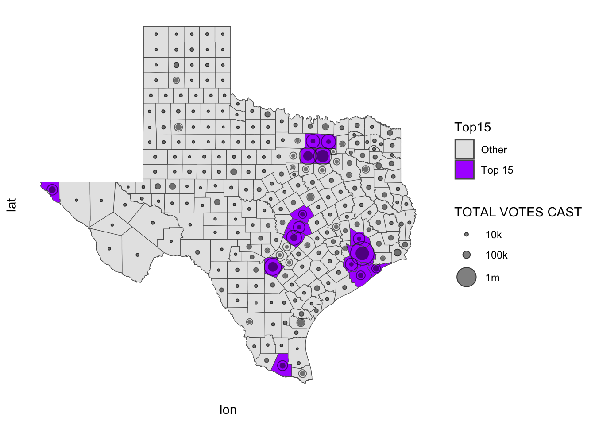
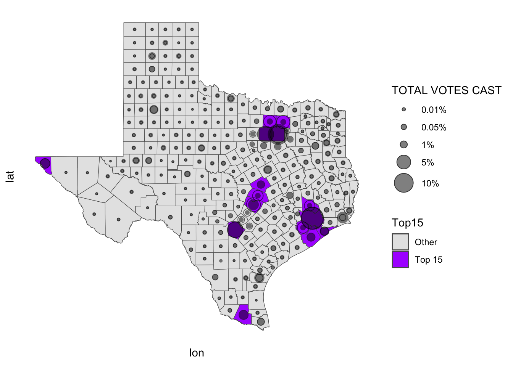

This dataset was created by TxDOT for internal purposes. TxDOT is not the authority for county boundary data for the state. These features were digitized by TxDOT from georeferenced USGS topo maps to enable the classification of roadway attributes for the purposes of satisfying federal and state reporting requirements, and to serve as a base layer for TxDOT’s cartographic products.
# load county shapefilessf <-st_read("data/gis/counties/Texas_County_Boundaries_4845315375211121464/County_Boundaries.shp")
Reading layer `County_Boundaries' from data source
`/Users/gbrock/Projects/texas_2024_elections/data/gis/counties/Texas_County_Boundaries_4845315375211121464/County_Boundaries.shp'
using driver `ESRI Shapefile'
Simple feature collection with 254 features and 9 fields
Geometry type: POLYGON
Dimension: XY
Bounding box: xmin: -12000000 ymin: 3000000 xmax: -10000000 ymax: 4400000
Projected CRS: WGS 84 / Pseudo-Mercator
Rows: 3108 Columns: 14
── Column specification ────────────────────────────────────────────────────────
Delimiter: ","
chr (14): FIPS, Geographic Name, Geographic Subtype, Total Vote, Lyndon John...
ℹ Use `spec()` to retrieve the full column specification for this data.
ℹ Specify the column types or set `show_col_types = FALSE` to quiet this message.
# select key variableselection1964 <- election1964 %>%filter(grepl("^48", FIPS)) %>%mutate(COUNTY =toupper(`Geographic Name`)) %>%select(FIPS, COUNTY, `Total Vote`, `Lyndon Johnson`, `Barry Goldwater`) # rename with party distinctionselection1964 <- election1964 %>%rename(c(DEMOCRATIC_1964 =`Lyndon Johnson`, REPUBLICAN_1964 =`Barry Goldwater`, TotalVOTES_1964 =`Total Vote`))# prep for join with current election data, including changing data to doubleselection1964 <- election1964 %>%mutate(TotalVOTES_1964 =as.numeric(TotalVOTES_1964),DEMOCRATIC_1964 =as.numeric(DEMOCRATIC_1964),REPUBLICAN_1964 =as.numeric(REPUBLICAN_1964)) %>%mutate(VoteSHARE_1964 =round((TotalVOTES_1964 /sum(TotalVOTES_1964)), 5))# rename 2024 election data with party distinctionselection2024 <- prez2024wider %>%select(COUNTY, TotalVOTES, `KAMALA D. HARRIS/TIM WALZ`, `DONALD J. TRUMP/JD VANCE`, VoteSHARE) %>%rename(c(TotalVOTES_2024 = TotalVOTES, DEMOCRATIC_2024 =`KAMALA D. HARRIS/TIM WALZ`, REPUBLICAN_2024 =`DONALD J. TRUMP/JD VANCE`, VoteSHARE_2024 = VoteSHARE))# join 1964 and 2024 voter dataelectionDiff <- election1964 %>%left_join(election2024, join_by(COUNTY))# pull county GIS data and join with voter dataelectionDiffSF <- countyVoteShareSF %>%select(COUNTY, geometry, Top15) %>%left_join(electionDiff, join_by(COUNTY))
Warning: st_centroid assumes attributes are constant over geometries
# plot total (nominal) vote differenceggplot() +# base mapgeom_sf(data = electionDiffSF, fill ="grey90", color ="grey50", size =0.2) +geom_sf(data = electionDiffSF, aes(fill = Top15)) +scale_fill_manual(values =c("Top 15"="#AD2FFF", "Other"="grey90")) +# 1964 bubbles (solid circles)geom_point(data = county_centroids,aes(x = lon, y = lat, size = TotalVOTES_1964),shape =16, color ="black", stroke =1, alpha =0.5) +# 2024 bubbles (rings)geom_point(data = county_centroids,aes(x = lon, y = lat, size = TotalVOTES_2024, stroke = .5),shape =1, color ="black", alpha =0.6) +# shared size scalescale_size(range =c(0.4, 9), breaks =c(10000, 100000, 1000000), labels =c("10k", "100k", "1m"),name ="TOTAL VOTES CAST") +coord_sf(datum =NA) +# remove gridlinestheme_minimal() +theme(legend.position ="right",axis.text =element_blank())
Warning: Removed 1 row containing missing values or values outside the scale range
(`geom_point()`).
Warning: Removed 2 rows containing missing values or values outside the scale range
(`geom_point()`).

# plot total (vote share) differenceggplot() +# base mapgeom_sf(data = electionDiffSF, fill ="grey90", color ="grey50", size =0.2) +geom_sf(data = electionDiffSF, aes(fill = Top15)) +scale_fill_manual(values =c("Top 15"="#AD2FFF", "Other"="grey90")) +# 1964 bubbles (solid circles)geom_point(data = county_centroids,aes(x = lon, y = lat, size = VoteSHARE_1964),shape =16, color ="black", stroke =1, alpha =0.5) +# 2024 bubbles (rings)geom_point(data = county_centroids,aes(x = lon, y = lat, size = VoteSHARE_2024, stroke = .5),shape =1, color ="black", alpha =0.6) +# shared size scalescale_size(range =c(0.4, 10), breaks =c(0.001, 0.005, 0.01, 0.05, 0.10), labels =c("0.01%", "0.05%", "1%", "5%", "10%"),name ="TOTAL VOTES CAST") +coord_sf(datum =NA) +theme_minimal() +theme(legend.position ="right",axis.text =element_blank())
Warning: Removed 1 row containing missing values or values outside the scale range
(`geom_point()`).
Removed 2 rows containing missing values or values outside the scale range
(`geom_point()`).

# list layers in census geodatabasest_layers("data/gis/census_tracts_2020/JoinedData.gdb")
Driver: OpenFileGDB
Available layers:
layer_name geometry_type features fields crs_name
1 Tracts Multi Polygon 85395 389 WGS 84 / Pseudo-Mercator
Reading layer `Tracts' from data source
`/Users/gbrock/Projects/texas_2024_elections/data/gis/census_tracts_2020/JoinedData.gdb'
using driver `OpenFileGDB'
Simple feature collection with 85395 features and 389 fields
Geometry type: MULTIPOLYGON
Dimension: XY
Bounding box: xmin: -20000000 ymin: 2000000 xmax: 20000000 ymax: 12000000
Projected CRS: WGS 84 / Pseudo-Mercator
censusTracts2020SF <- censusTracts2020 %>%filter(State_Name =="Texas") %>%select(GEOID, NAME, County_Name, P0010001, # Total population Total P0010003, # White alone P0010004, # Black or African American alone P0020002, # Hispanic or Latino P0020003, # Not Hispanic or Latino P0020005, # White (Non-Hispanic/Latino) P0020006, # Black (Non-Hispanic/Latino) H0010001, # Housing Units total P0050001) # Population in group quarters total# rename COUNTY variable name and remove 'county' from all listings to match other datasetscensusTracts2020SF <- censusTracts2020SF %>%rename(COUNTY = County_Name)censusTracts2020SF <- censusTracts2020SF %>%mutate(COUNTY =toupper(sub(" County", "", COUNTY)))# create new race variable, all non-white persons in a countycensusTracts2020SF <- censusTracts2020SF %>%mutate(P1NonWhite = (P0010001 - P0010003))
Data dictionary reference name Table Universe Table number and contents P0010001 P1 Total population Total P0010003 P1 Total population White alone P0010004 P1 Total population Black or African American alone
P2. Hispanic or Latino, and not Hispanic or Latino by Race
Data dictionary reference name Table Universe Table number and contents P0020001 P2 Total population Total P0020002 P2 Total population Hispanic or Latino P0020003 P2 Total population Not Hispanic or Latino
library(dots)harris_county_shp <- censusTracts2020SF %>%filter(COUNTY =="HARRIS")map4 <- dots::dots_points(shp = harris_county_shp, cols =c(P0020005, P1NonWhite), divisor =5) %>% dplyr::mutate(dots_type = dplyr::case_when( dots_type =='P0020005'~'White (Non-Hispanic)', dots_type =='P1NonWhite'~'Non-White' )) %>%ggplot() +geom_sf(data = harris_county_shp, fill =NA, color ='black') +geom_sf(aes(color = dots_type), size =0.05, alpha =0.6) +scale_color_brewer(name ='Race/Ethnicity', palette ='Accent') +labs(title ='White (Non-Hispanic) and Non-White Adults in Harris County, TX',caption ='One point per 500 adults.' ) +theme_void() +coord_sf(xlim =c(-95.6, -95.1), ylim =c(29.6, 30.1) )